POCket Tour is an AR tour that takes users beyond their iPhone to experience Seattle unlike ever before.
Overview
Duration: 3 weeks
Type: iOS Development Course
Role: Interaction Designer
Tools: Adobe Illustrator, Adobe XD, Xcode
POC-ket (People of Color) Tour is an AR tour built on Objective-C for iOS users. It was designed and developed to educate users about International District's impact on Seattle culture and share a part of Seattle's history that is often overlooked. Thus, the target audience is museum-goers of ages 16+.
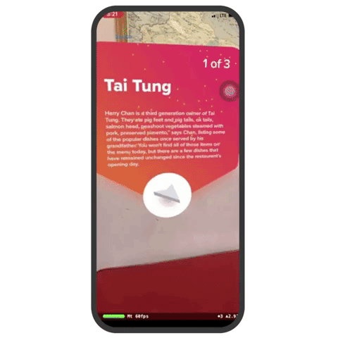
Guiding Question:
How can AR be implemented to enhance the touring experience by highlighting authentic stories of immigrant culture and the history of East Asian diaspora?
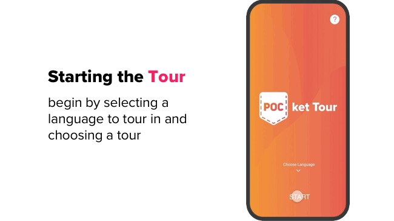
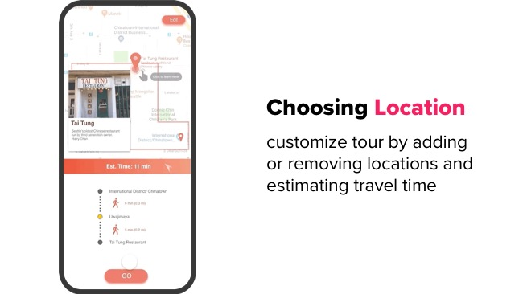
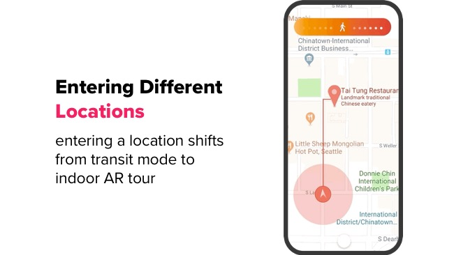
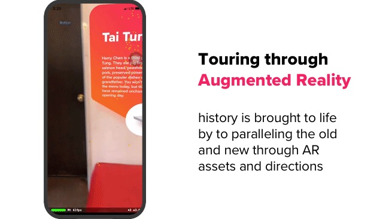
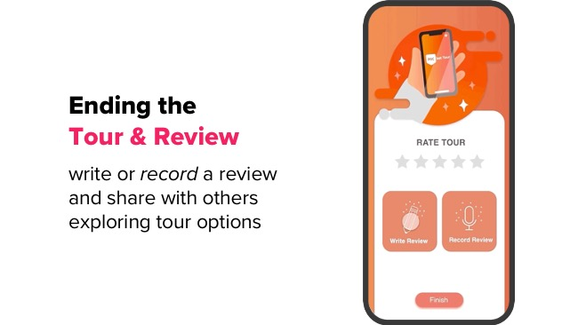
Research
Inspiration
We drew upon the idea of a living museum as we explored the intersections of mixed reality to paint a historic portrait - inspired by the Chicago 00 project.
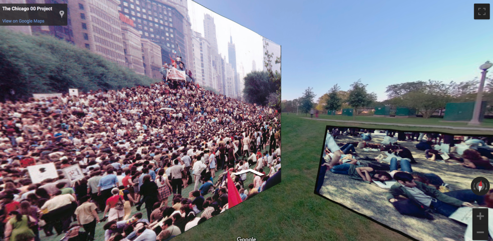
Location
We identified four locations with deep roots in the district curated through a criteria of (1) number of years open, (2) cultural significance, (3) popularity, and most importantly (4) whether historic knowledge was accessible during the duration of the project.
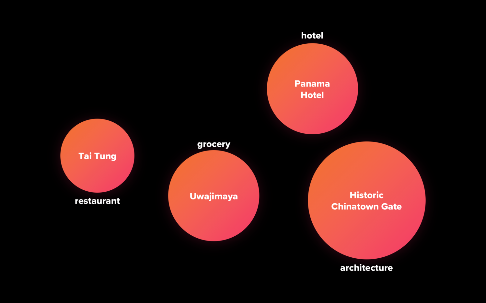
Content
Team members went out to meet with business owners, employees, and regulars to learn more about the destination, stories behind their rise in prominence, collect anecdotes, and gain material for content creation.

Ideation
Audience
The target audience is museum-goers who want to learn about Seattle and it’s history. This could range from longtime Seattleites to recent tourists.
Safety concerns led us to narrow our audience further by recommending use to ages 16+ due to the added danger of a walking tour that includes crossing streets.
Color
Since we were focusing on presenting East-Asian roots, it made sense to pull from prominent and reoccurring colors from flags of countries represented within the district. However, it was important that this application be inviting and give a modern feel to match the cutting edge experience. My intent is to combat a darker history with an warmer optimism for the future that comes with learning and understanding.
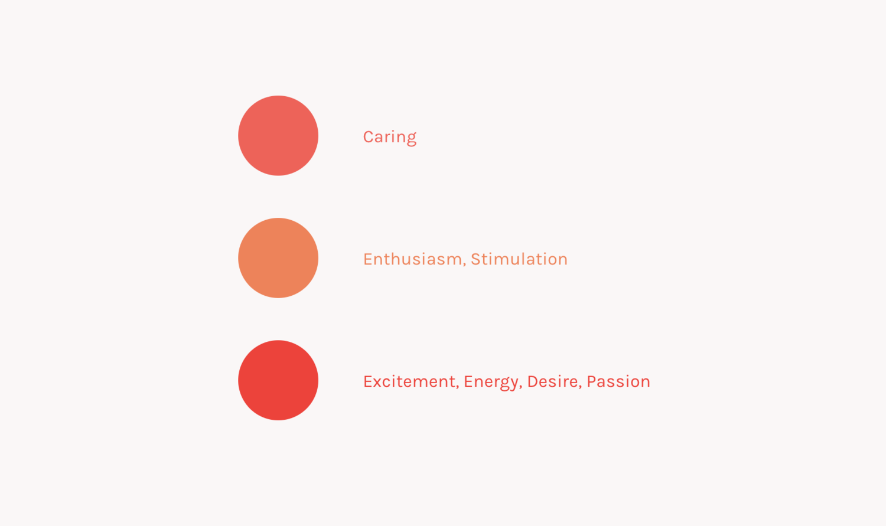
Logo
A tour that tells the story of people of color and fits in your pocket. I hoped that would incite curiosity and open up conversation around the identities that make Seattle what it is - after all, it’s not all about tech and hipsters.
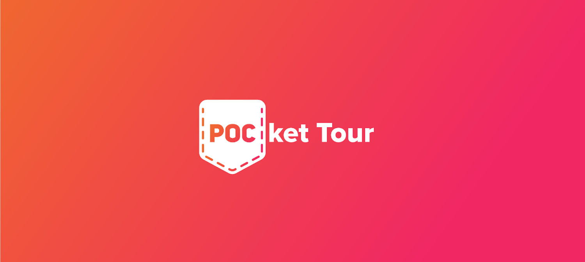
The first Asians to settle in Seattle were Chinese laborers working in mines, construction, and mills in the late 18th century. By the mid 19th century, it was not uncommon to see the working men wearing Levi’s denim workwear. It’s a history that ties the old and the new, as does POCket Tour.
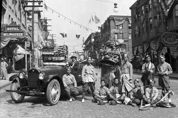
Identifying Scope
The team and I were drawn to the idea of a mapping project that locates moments, memories and histories in relation to physical space with content centered around people of color in Seattle. This concept, however, was too broad and was narrowed to Asian Americans in International District to limit our scope.
This idea could have been generated as an interactive map platform like Chicago00 but we wanted to encourage users to explore the district on their own - meeting community members along the way. For this reason, we opted for an AR tour that would allow for overlay of informational facts, historical photos, and 8D audio.

Prototype
Sitemap
Due to the short duration of the project, we focused our concept on a recommended tour consisting of the four locations we researched and would include digital artifacts at each location as well as during the walk between locations using augmented reality seen only on the device. The tour, however, could be edited to include other locations we included as visit options.

User Flow
Since the application is intended for educational purposes, the recommended tour allows for a learning experience without the added time of figuring out where to go. However, if the audience is already familiar with a location or would rather explore something different, they can edit the tour by choosing from a list of options that would have pre-curated information.
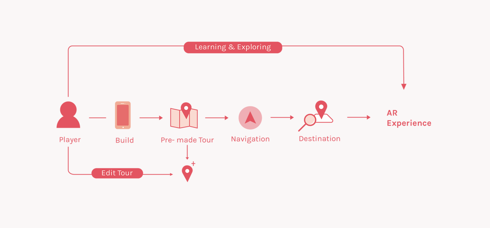
Iteration
During our site visit we realized that a walking tour could be dangerous with passing cars, so limited ourselves to work in a visual space without an audio component so that users would hear vehicle movement or honking. Ideally, we would also include audio detection that would trigger warning signs.
Another element we wanted to be mindful of from the get-go was accessibility. In trying the route myself, I found it beneficial to mark ramp coordinates. This way, routes could be chosen to include wheelchair accessibility with ramps onto sidewalks.
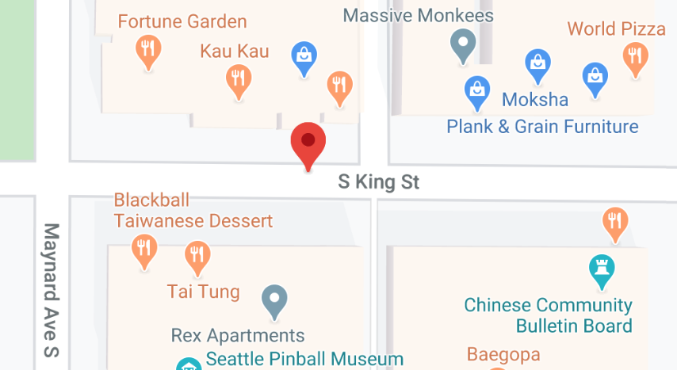
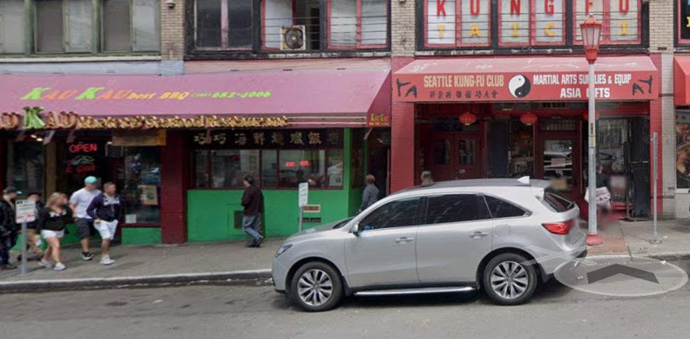
Reiteration - Language Selection Feature
Our goal was to bring a museum to life in a novel way. What's one thing we could do that the local Wing Luke Museum of the Asian Pacific American Experience did not already offer? The answer was language selection.
I changed the text to different languages with reasoning that, through research, we learned of a lot of people that frequent dining options in international district favor locations that taste like home. I emulated that through a language experience providing comforts from home.
However, this device is for visitors at large so we opted for leading languages around the globe like Spanish and French to encourage learning from other cultures. This is one way we thought to encourage diversity, inclusion, and being open minded toward new cultures and experiences.

Mockup
I found this to be an enjoyable process because I was not tied down to the screen real estate. Due to the nature of the project, we intended to keep the content on the screens minimal so that the focus would be on the augmented reality. However, we also wanted to present people with the information to make educated decisions about where they chose to tour.
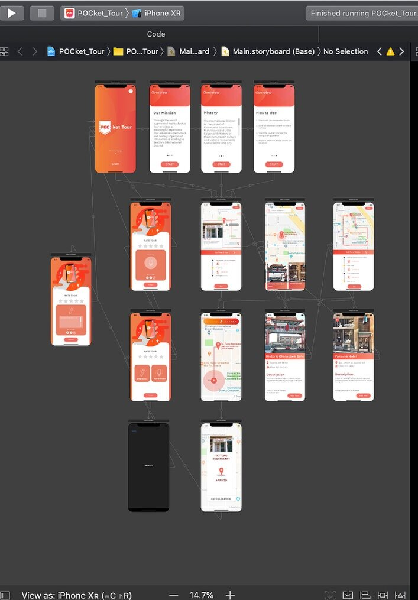
Development
Xcode's Scenekit
The augmented reality was made possible by Xcode's SceneKit. The kit allowed us to use Apple Developer's plane detection to scan surfaces and present an interactive display. For this project, the code scanned for a solid, vertical plane on which our location tags were anchored.
Accomodation
As the team's designer, my biggest challenge was the timeline. We had originally planned for this project to come to fruition over the course of 8 weeks but due to the snowpocalypse, our timeline was shortened to 3 weeks. Ideally, the augmentation assets would be linked to map navigation and geolocation so that images could be anchored and displayed in specific locations. In reality, they popped up *almost* randomly on the plane.

Reflection
Lifesize Canvas
The exciting challenge was using the real world as part of my canvas. There were a lot of elements to consider that forced us to think about how POCket Tour transcends from a device to physical space for an entirely new experience. A lot of these challenges came out during the building of the tour, such as:
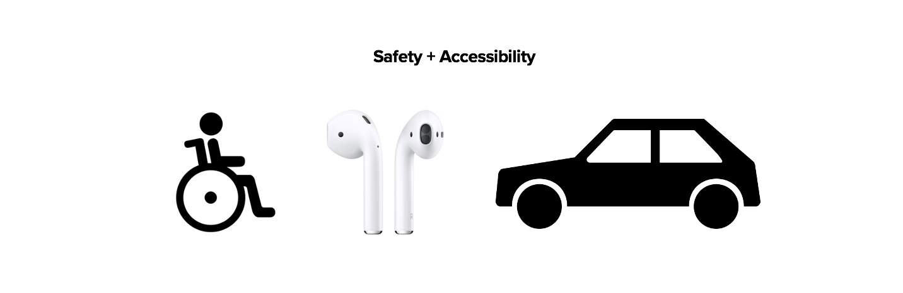
1. Safety
AR users need to be aware of their surroundings - especially when they are near streets or around other people. Currently, we do not have anything in place for warnings or method of detection, however, we opted against incorporating 8D audio with a goal that users would still be aware of their surroundings through sound. This also gives more opportunity for users to engage with people and artefacts in they physical space around them.
2. Accessibility
From the start, we knew the app must be wheelchair accessible. This was on our mind from the get go but because we were limited due to the fact that we were using Google Maps to connect locations in the tour. There isn't currently an option for people to select "wheelchair accessible" as part of route options - although I can create default, wheelchair accessible tours based on my own route creation.
Future
If this product was further developed, I would incorporate auditory guidance as users navigate through the sites to elevate the experientials of the space with the stipulation that it also use audio detection to warn again incoming traffic. The audio also allows users who need visual accommodation to be included in the product experience.
Version 4.1 - Updated April 2020